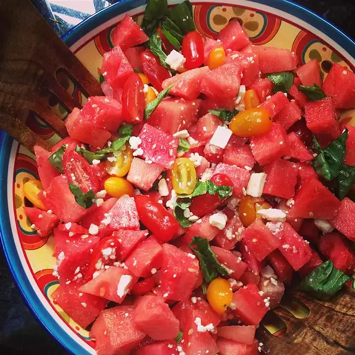

Watermelon and Tomato Salad

An unexpected but deliciously addictive flavor combination! This recipe serves two, but you may want it all for yourself.
Unusual combination of flavors, but it worked for us. I had a mini melon in the fridge as well as some very ripe campari tomatoes (the ones on the vine), which released quite a bit of liquid. Next time, I think I'll mix the tomatoes and watermelon together and then drain because the liquid diluted the balsamic vinegar flavor. Very welcome change to the salad course, particularly at this time of year.
Ingredients
- 1 pint cherry tomatoes, halved
- 2 cups cubed seeded watermelon
- 6 large basil leaves, thinly sliced
- ½ cup crumbled feta cheese
- teaspoon lemon zest
- 2 tablespoons extra-virgin olive oil
- 1.5 tablespoons white balsamic vinegar
- salt and pepper to taste
Steps
- Place the tomatoes and watermelon into a mixing bowl. Sprinkle with the basil, feta cheese, and lemon zest. Drizzle with the olive oil and balsamic vinegar. Toss gently. Season to taste with salt and pepper before serving.
- Enjoy!